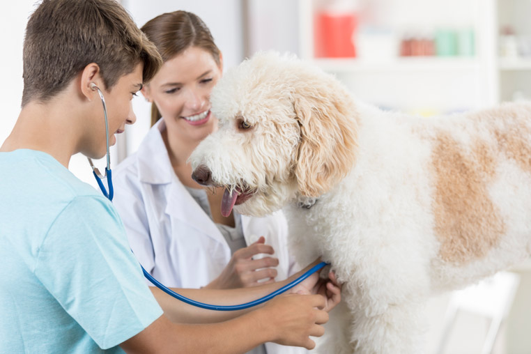

La clinique propose tous types de stages tous au long de l'année
Afin d’encadrer au mieux ces stages, la clinique a mis en place une feuille
d’auto-évaluation
personnelle
remise au stagiaire un mois après le début de son stage. Cette évaluation a pour but de faire le point
régulièrement sur le stage avec l’élève concerné. Le ou la stagiaire est reçu(e) en entretien individuel
avec la tutrice afin de faire le bilan de cette évaluation
La clinique vétérinaire Louis Pasteur propose, tout au long de l’année, des stages conventionnés pour
des
personnes venant de tous horizons : collégiens et lycéens, futures ASV, étudiants vétérinaires, adultes
en reconversion professionnelle ou stage de découverte libre.
Nous nous faisons un plaisir de faire découvrir et partager les multiples facettes du métier de
vétérinaire ou celui d’auxiliaire spécialisé(e) vétérinaire (ASV).
La durée des stages est comprise entre une semaine et deux mois au maximum et ils ne sont pas rémunérés.
Le candidat doit obligatoirement fournir une convention de stage.
Stages dans le cadre d'une formation ASV
Stage d'étude vétérinaire
Stage de reconversion
Stage scolaire (collége et lycée)

La clinique vétérinaire Louis Pasteur propose, tout au long de l’année, des stages
conventionnés pour des personnes venant de tous horizons :
collégiens
lycéens
futures ASV
étudiants vétérinaires
adultes en reconversion professionnelle ou stage de découverte libre.
Nous nous faisons un plaisir de faire découvrir et partager les multiples facettes du métier de
vétérinaire ou celui d’auxiliaire spécialisé(e) vétérinaire (ASV).
La durée des stages est comprise entre une semaine et deux mois au maximum et ils ne sont pas
rémunérés.